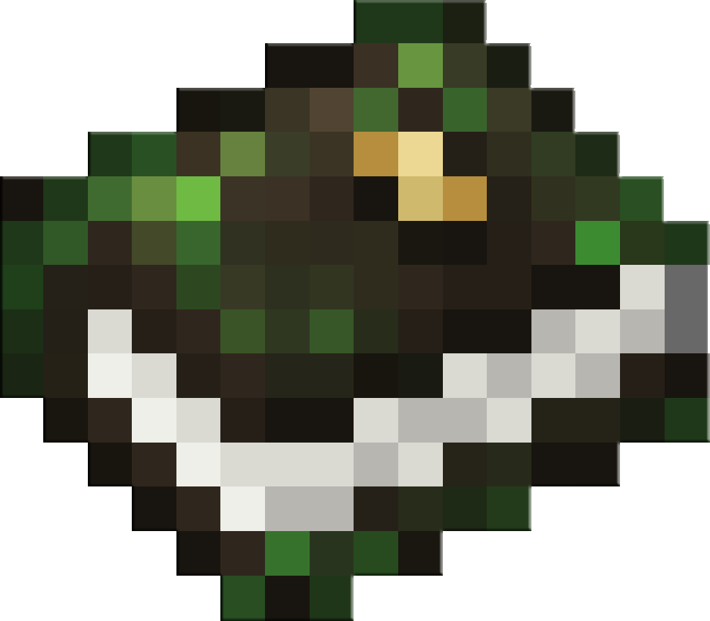
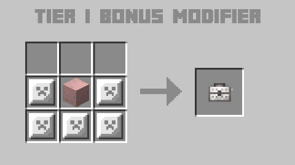

Tinkers Addons
Tinkers Addons brings back the old Tinkers Constructs upgrade and repair mechanisms that were dropped after Minecraft 1.7.10. These features have the same effects but are implemented in a different way from the original!
The amelioration book offers a means to bring back the old "auto-repair" mechanic to modern Tinkers'. It works just like the old Auto Repair did, repairing faster in the nether, rain, etc.. Amelioration is levelable up to Level V, just like the original.
Offers (and exceeds) the original "get an extra modifier" mechanic from older Tinkers' Construct, allowing you to add up to 4 extra modifiers to a tool. There are no tiers and they can be applied in any order, but they can only be applied once and progressively increase in difficulty.
